Five additions since the v1.0 launch — each documented in detail below in its own section, linked here for jump-to-feature:
- Replay × N timing envelope — voice cycles repeat 2/3/5/10/∞ times. See §11 → ⏱ Timing.
- Modal chord templates — Ionian, Dorian, Phrygian, Lydian, Mixolydian, Aeolian, Locrian, Harmonic Minor, Melodic Minor in a new Modal chord category. See §4.
- Granular sampling (iOS) — apply the grain scheduler to any loaded sample. See §10 → Granular sampling.
- Haptics intensity (iOS) — Off / Light / Heavy cycle, persisted across launches. See §17.
- Global BPM + delay sync — drives every voice's delay-time when its timing is set to a musical division. See §8 → Delay.
1Quick start
Tap Play. Tweak. Breathe.
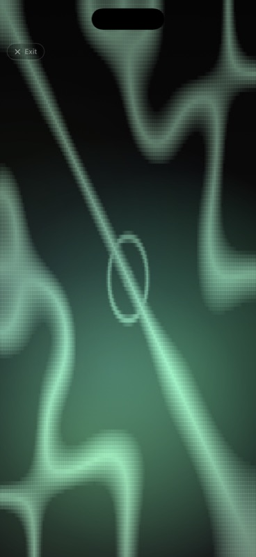
- Open the app (web at dronemeditations.com or the iOS app).
- Press the round play button at the bottom. A 30-min session timer starts; audio fades in.
- Try the PRESET pill — start with "Earth Drone" or "Tibetan Bowl."
- To explore: drag any oscillator's frequency slider; toggle S (solo) and M (mute) to listen to one voice at a time.
- Tap the screen anywhere outside controls to hide the panel and watch the Chladni visualization respond.
- Physically-calibrated cymatics — Chladni patterns rendered from real-world high-speed plate-vibration measurements, responding live to the actual frequency of every voice (not just a stylised animation). See §12.
- Six tuning systems — 12-TET, Just Intonation, Pythagorean, Verdi 432 Hz, Lou Harrison Free JI, Harry Partch 43-tone, Wendy Carlos α/β/γ. See §5.
- 38 Drone Artists presets — character-rich tributes to Pauline Oliveros, Éliane Radigue, Stars of the Lid, Sunn O))), William Basinski, and 14 more masters, with granular / fading variants plus a Drift Showcase set. See §6.
- Granular waveform — pink noise chopped into Hann-windowed grains for geiger / rain / cloud textures. See §7.
- Sample play window — trim start/end + per-loop fade-in/out on any loaded sample, so you can turn a long field recording into a seamless loop. See §10.
- Per-voice drift — Static / Up/Down / Wave / Ocean / Glacial pitch motion, plus configurable amount + period chips so each voice drifts on its own clock. See §11 → DRIFT.
- Auto-morph — duration-driven 0→100 % morph between any two presets, optional ping-pong. See §11 → MORPH.
- 25 scripted Journeys — multi-stage timed meditations (Deep Listening Lineage, Heavy Resonance, Minimalist Arc, Spiritual Path…) plus a composer for your own. See §11 → JOURNEY.
- Tune to Room (LISTEN) — YIN pitch detection from the mic, snap the chord root to whatever you sing or play. See §11 → LISTEN.
- Reverb-bloom Pause/Stop (iOS) — Pause and Stop don't just fade volume; per-voice reverb mix + decay bloom upward then descend with the master, so the sound dissolves into the room rather than disappearing. See §15 → Play / pause / stop.
- Mastered WAV + M4A export (iOS) — record any session and get two files: a 24-bit PCM WAV for editing / archival and an AAC M4A sidecar for sharing. Both carry loudness normalization + 2 s/4 s fades + metadata, ready to drop into a DAW or AirDrop. See §15 → Recording.
2Anatomy of the screen
Four floating zones: header, pill row, oscillator strips, transport.
![Drone Meditations main screen on iPhone — header with help / camera / spectrum / cymatics icons, CHORD · PRESET · DRIFT pill row, then the OSC 1 · OSC 2 · OSC 3 · OSC 4 row ending in a 🎲 randomize-all dice plus a faint disabled ↶ undo, oscillator 1 strip with waveform icons / PAN / LVL / FILT (LP HP BP, CUTOFF, Q, DRIVE) / FM / CHO / DLY / REV / LFO 1 row with shape icons and a target row (pan, amp, cut, pitch, Q, FM) showing PAN highlighted to demo a multi-target LFO, then the play-stop-record transport with 07:01 / 15:00 timer and the © 2026 Jose Gude MD · Manual link at the bottom](manual-images/02-main-ui.jpg)
From top to bottom: header (app name, tuning + chord summary, spectrum / camera / cymatics-style toggles) → pill row (CHORD · PRESET · DRIFT · LISTEN · PERFORM · JOURNEY · MORPH · GALLERY) → oscillator strips (one per voice, each carrying waveform + frequency + pan + level + filter + FX + 4 LFOs) → transport (Play / Stop / Record + session timer) → copyright + Manual link (the slim row at the very bottom).
Tap or click anywhere outside a control to dismiss the panel and reveal the visualization full-screen. Tap again to bring it back. A slim "Tap to show controls" hint appears at the bottom when hidden, with mini freq + S/M controls so you can still adjust audio while watching the Chladni.
3Oscillator strips
Four independent voices, each routed through its own FX chain to the master limiter.
Per-strip controls
| Control | What it does |
|---|---|
| Waveform | Sine, triangle, sawtooth, square, white / pink noise, granular, or loaded sample. Picking Granular reveals a GRAIN row; picking Sample reveals a sample-row + amber WINDOW row for trim & per-loop fades. |
| Frequency | Logarithmic 20–2000 Hz slider. Tap the readout to type an exact value (2 decimals). |
| Level | Per-voice volume, 0–100%. |
| S | Solo. Any voice soloed silences the unsoloed ones. |
| M | Mute. |
| 🎲 Randomize (per strip) | Re-rolls just this oscillator. Everything except level changes: waveform, freq, filter, all 4 LFOs, reverb, delay, drift. One tap = a new world. |
| 🎲 Randomize all (top OSC bar) | The dice button at the end of the OSC 1·2·3·4 pill row rolls all four voices at once, then picks a fresh chord — without disturbing your master volumes. The faint ↶ undo button next to it restores the exact state you had before the last randomize, so you can A/B between "the patch you had" and "the patch the dice gave you." |
| ⭐ Voice presets | Save / load / delete just this oscillator's settings. Great for keeping a favorite bass + cycling through pads above. |
| 🌀 Drift | Per-voice pitch & pan drift (off, glacial up/down, octave up/down, slow pan, deep vibrato, etc.). |
| ⏱ Timing | Stagger when this voice enters the mix: Start after (Now / 15 s / 30 s / 1 / 2 / 5 / 10 min — silent then 8 s fade-in) and Play duration (Forever / 1 / 3 / 5 / 10 / 15 / 20 min — 8 s fade-out at the end). Lets you introduce drones gradually during long meditations, then let them recede. Several Drone Artists presets use this — Stars of the Lid blooms its chord at 0 / 30 / 90 / 180 s; Basinski's pink-noise hiss enters at 90 s; Riley's cascade enters at 0 / 15 / 45 / 90 s. v1.1: a third chip row sets Replay to Once / × 2 / × 3 / × 5 / × 10 / ∞ — the [silent Start after → fade-in → Play duration → fade-out] cycle repeats N times before going silent forever. |
| Pan | −1 (full left) to +1 (full right). 0 = center. |
Filter
Each voice has a state-variable filter with selectable mode (LP, HP, BP), cutoff (20 Hz – 8 kHz, log), and Q 0.3 – 20.
Q = resonance. They're the same control under two names — Q is the technical term (quality factor: cutoff ÷ bandwidth), resonance is the common synth term. Higher Q narrows the filter peak around the cutoff, which we hear as a taller, more whistling/squelchy emphasis at that frequency. Low Q (0.3–1) = smooth pad shaping; high Q (5–20) = vowel-like resonant sweeps.
4Chord, key, octave
Press the CHORD pill to generate all 4 voice frequencies from a chord template.
Choose a root note (C, C♯, D…), an octave (1–6), and a chord type from one of these categories:
- Common — Major, Minor, Sus2, Sus4, dim, aug, Maj7, m7, 7, 9, …
- Extended — 11, 13, add6, m9, maj9, mMaj7, 7♭9, 7♯11, …
- Modal (v1.1) — characteristic 4-note slices of each diatonic / harmonic / melodic mode: Ionian, Dorian, Phrygian, Lydian, Mixolydian, Aeolian, Locrian, Harmonic Minor, Melodic Minor. Each entry captures the mode's most identifying degrees (e.g. Phrygian = 1 / ♭2 / ♭3 / ♭7). When Quantize to scale is on, the snap cache fills with those notes so a pitch-LFO arpeggiates inside the mode instead of wandering chromatically.
- Cymatic — Tetrachord 4:5:6:7, 3:4:5:7, harmonic 6:8:10:13, etc. Chosen to give visually striking nodal patterns.
- Spectral — Sable's chord (Vingt Regards), Scriabin Mystic, Ligeti Lontano, …
5Tuning systems
The frequencies the chord pill produces depend on the tuning you choose.
- 12-TET — modern equal temperament (default). 12 equal semitones per octave.
- Just Intonation — small-integer ratios. Beats less; sounds "locked."
- Pythagorean — stacks of 3:2 fifths. Bright, edgy.
- Verdi (432 Hz) — A4 = 432 Hz instead of 440.
- Lou Harrison Free JI — flexible just intervals tuned to a 1/1.
- Harry Partch 43-tone — Partch's 11-limit microtonal lattice.
- Wendy Carlos α (alpha) — 78¢ step, ~15.4 notes per octave.
- Wendy Carlos β (beta) — 63.8¢ step, ~18.8 notes per octave.
- Wendy Carlos γ (gamma) — 35.1¢ step, ~34.2 notes per octave.
Tunings only affect how chord frequencies are computed; the per-voice frequency sliders remain free continuous controls so you can hand-tune outside the lattice anytime.
6Presets & voice presets
Two kinds: full presets (all 4 voices + master + FX) and per-voice voice presets (one strip at a time).
Full presets
Press the PRESET pill. Categories include:
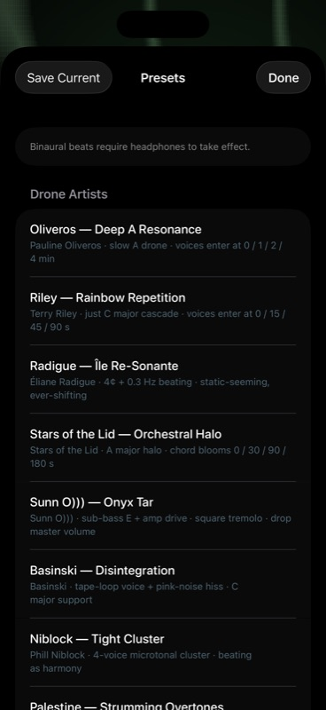
- Drone Artists — 38 character-rich presets that capture each artist's signature waveforms + FX + LFOs, not just their pitches: Pauline Oliveros, Terry Riley, Éliane Radigue, Stars of the Lid, Sunn O))) (drop master volume first), William Basinski, Phill Niblock, Charlemagne Palestine, Yoshi Wada, Harold Budd, Alice Coltrane, Earth, Nurse With Wound, Keiji Haino — most appear twice, once as the original tribute and again as a (Granular) or (Fading) variant that exploits the new granular waveform and per-loop sample fades. A final Drift Showcase sub-set (Tide Breath, Detune Choir, Quarter-Tone Cluster, Pendulum Dawn, Tibetan Bowl Cycle, Microtonal Dance) demos the new per-voice drift amount / period overrides — each preset uses a different drift shape so you can hear what the Ocean / Wave / configurable-period modes actually do.
- Binaural — Theta, Alpha, Beta and Gamma beat presets (paired carriers ~7, 10, 17, 40 Hz apart).
- Natural Resonance — Earth, OM 136.1, Sun 126.22, Moon 210.42, Phi-augmented chord, Sable's chord.
- Cymatics — chords chosen to produce especially symmetric Chladni patterns.
- Mystic & Composers — Scriabin Mystic chord, Ligeti chromatic / whole-tone / microtone clusters.
- Solfeggio — 96, 174, 285, 396, 417, 528, 639, 741, 852, 963 Hz singles. See the note on Solfeggio claims below.
Tap "Save as preset…" to capture the current full state under a custom name. User presets live alongside the factory list in their own section.
Voice presets
The ⭐ button on each oscillator strip opens a menu to Save current, Load…, or Delete… a single-voice snapshot — waveform, freq, level, pan, filter, all 4 LFOs, FX, drift. Useful for keeping a perfect bass and quickly swapping the pad above.
Sharing presets between devices — iPhone ↔ iPad ↔ browser ↔ a friend
Every saved user preset can be packed into a .dronepreset file — a single JSON envelope containing the full per-voice state plus any loaded sample audio inline. The receiving device reconstructs everything end-to-end, no extra copy of the audio needed.
- Share (iOS): in the Presets sheet, tap the ↑ icon next to a preset. The iOS share sheet opens — pick AirDrop, Save to Files, iCloud Drive, Mail, or Messages. Typical preset is ~5–15 KB without a sample, ~7 MB with a 5 MB WAV.
- Import (iOS): top-right ↓ icon in the Presets sheet opens the Files picker filtered to
.dronepreset. Or — even simpler — just tap the file in Files / Mail / AirDrop and iOS hands it directly to Drone Meditations. - Share (web): the ⇪ button on each row downloads the file. Drag it to a Files window or iCloud Drive folder and it appears on every device signed in.
- Import (web): top-right Import… button in the Presets sheet opens a file picker; pick a
.dronepresetand it's added to Your Presets. - Same format on iOS and web — a preset shared from the iPhone app loads in the browser app and vice versa.
- Re-imports never overwrite — every import gets a fresh id, so importing the same file twice gives you two distinct entries. The original creation date is preserved so you can see when the author saved it.
For automatic iPhone ↔ iPad sync without manual sharing, see the iCloud preset sync note in the iOS app's Presets sheet (presets you save on one device appear on the other within a few seconds; samples still travel via .dronepreset files).
7Waveforms
Eight source options per voice — four periodic, three stochastic (incl. granular), plus user samples.
| Waveform | Character | Best for |
|---|---|---|
| Sine | Pure fundamental, no harmonics. | Binaural carriers, calm pads, sub-bass. |
| Triangle | Soft harmonic content, falls off fast. | Organ-like, warm thirds, Riley/Reich repetition. |
| Sawtooth | Rich harmonic stack, classic bowed-string / brass. | Stars of the Lid pads, Coltrane organ, Sunn O))) low end. |
| Square | Hollow, odd harmonics only. | Doom octaves, NWW textures, Earth dyads. |
| White noise | Flat spectrum — equal energy at every frequency. | Tape hiss, wind, breath, NWW bursts. Frequency knob has no effect. |
| Pink noise | 1/f spectrum — natural-sounding, warmer than white. | Surf, rain, Basinski tape-decay layer, ambient ground floor. |
| Granular | Pink noise chopped into Hann-windowed grains scheduled at a chosen density. Each grain gets a random stereo placement so the texture breathes. | Geiger counters, rain drops, sparse crackle clouds — the negative-space between grains is what makes the texture feel alive. See the four (Granular) Drone Artists presets. |
| Sample | User-loaded audio file looped at chosen pitch. | Tibetan bowls, field recordings, your own loops. |
Noise voices ignore the frequency slider and just hiss. They still pass through every per-voice control downstream: filter (HP for airy hiss, BP for vowel-noise), drive (warmer texture), chorus, delay, reverb, LFOs (S&H on cutoff gives the gritty pattern shifts in the Nurse With Wound preset). Pink noise is generated by Paul Kellet's economy variant of the Voss-McCartney filter; white is uniform random.
Granular synthesis (the Granular waveform)
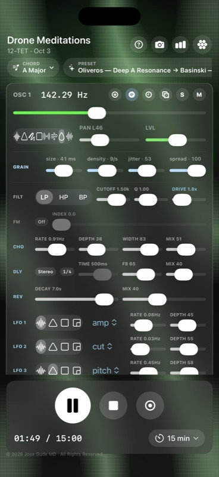
When you pick Granular as the waveform, a GRAIN row appears under the picker with four sliders:
- SIZE — grain length, 5–500 ms (log). Short grains read as clicks; medium grains (~25–80 ms) sound like raindrops; long grains (~200–500 ms) bleed into soft clouds.
- DENSITY — average grains per second, 0.5–50/s (log). Below 1/s the readout flips to N/min for the geiger-counter range. Combine sparse density + short grains for "rare events," or dense + medium for a downpour.
- JITTER — randomness in inter-grain timing, 0–100 %. 0 = perfectly clocked; 100 = pure Poisson scatter (each grain feels independent).
- SPREAD — random per-grain stereo placement, 0–100 %. Acts on top of the voice's main pan slider, so you can offset the grain field while keeping its center.
The source material is pink noise (warmer than white for meditation). Filter and reverb apply downstream, so a high-pass + plate-reverb stack turns granular noise into raindrops landing in a glass-walled room. Stack two granular voices panned opposite for stereo rain showers — the Sparse Rain and Rain Shower presets do exactly this.
8Per-voice FX — filter, drive, FM, chorus, delay, reverb
Each oscillator has its own filter + drive + FX chain — vertical order on the strip is FM → Chorus → Delay → Reverb. Drive lives next to the filter since it shapes the source before the rest of the chain.
Filter
Mode (LP / HP / BP), cutoff, Q (= resonance). LFO 2 by default modulates cutoff. Use BP + high Q for "vowel" sweeps; LP + low Q for warm pads. Q is also an LFO target — sweeping it makes the filter peak "breathe."
Drive (soft saturation)
Per-voice tanh waveshaper applied to the raw oscillator output before the filter. 1.0× = clean (bypass). Up to 12× for heavy doom-guitar grit. Because it sits pre-filter, the harmonics it generates get carved by the LP filter — the same architecture that turns a clean amp into a guitar cab. Use sparingly: 1.5–3× warms; 4–7× saturates; 8–12× is full overdrive (Sunn O))) / Earth territory).
FM (cross-oscillator)
Pick one of the other three voices as the modulator from the source dropdown, then dial index (0–800 Hz, log). The modulator's raw oscillator signal is scaled by index and added to the carrier's frequency — small values give vibrato, mid values give chime-like timbres, large values give bell or FM-bass character. Set source to Off to disable.
Chorus (stereo)
Two short delay lines fed by the post-filter signal, modulated by a sine LFO whose L/R phases are offset by width × π. Rate 0.05–6 Hz, depth 0–1 (±12 ms swing at depth = 1), width 0–1 (full counter-phase at 1.0), mix 0–1. The chorus's stereo width persists regardless of pan position.
Reverb
Algorithmic reverb with decay time (0.1–10 s, log) and wet/dry mix. Long decay + low mix = ambient halo. Short decay + high mix = wet plate.
Delay — mode
Three routings: Mono (both sides equal), Stereo (each side has its own line), Ping-Pong (echoes bounce L → R → L). Pick mode from the dropdown next to the delay sliders.
Delay — timing
Either a manual time (20 ms – 2 s) or a musical division: 1/2, 1/3, 1/3t, 1/4, 1/4t, 1/8, 1/8t, 1/16, 1/16t. Musical timings sync to the global BPM. v1.1: the BPM is now user-editable (default 80, range 30–240). Tap the monospaced "80" pill in the master row (iOS) or the BPM segment of the header subtitle (web) to pick a new tempo — every sync'd delay across all four voices recomputes instantly. Free-timing delays are unaffected by BPM changes; they keep whatever absolute ms value you dialed.
The feedback slider controls how many echoes you get. Above ~0.85 it starts feeding into itself — use sparingly.
9The 4 LFOs per voice
Each voice has four low-frequency oscillators that modulate a chosen target.
| LFO | Default target | Suggested use |
|---|---|---|
| LFO 1 | Amplitude | Slow tremolo / breathing pad. |
| LFO 2 | Filter cutoff | Vowel-like sweeps. |
| LFO 3 | Pan | Stereo wander, auto-pan. |
| LFO 4 | Pitch | Vibrato (small depth) or wobble (large). |
For each LFO you control:
- Shape — Sine, Triangle, Sawtooth, Ramp, Square, Sample & Hold.
- Target(s) — Amplitude (VOL), Pan, Filter cutoff (CUT), Filter Q (resonance), Pitch, or FM index. Target buttons are toggleable: one LFO can drive multiple targets at once — tap PAN and CUT on the same LFO and a single triangle wave will sweep both stereo position and cutoff in lock-step.
- Rate — 0.02 – 8 Hz (log).
- Depth — how strongly it modulates the target.
10Samples — upload + bundled
Any of the four voices can play back a looped audio sample instead of a generated wave. Two ways to load one:
Bundled samples
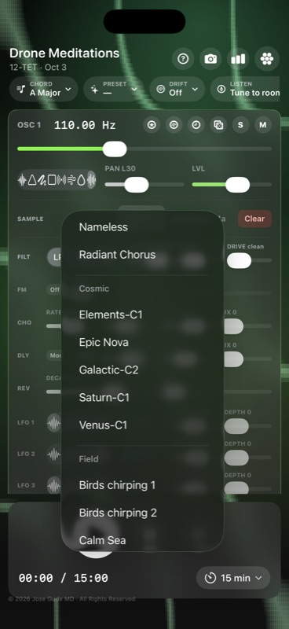
The Bundled ▾ button on each oscillator strip opens a small picker of audio files shipped with the app. Tap one and it loads instantly — no upload dialog, no Files-app round-trip. Web sources files from web/samples/ via a manifest (web/samples/index.json); iOS sources from a Samples folder inside the app bundle. Both folders have a README explaining how to drop in your own audio. The picker groups entries by an optional category (e.g. "Bowls", "Field", "Keys").
Upload your own
- Click Load file… on any oscillator's sample row.
- Pick a WAV / MP3 / OGG / FLAC file. Mono or stereo, any sample rate.
- The file is stored in your browser's IndexedDB (web) or the app's Documents folder (iOS) so it persists across sessions and into saved presets.
Sample voice behavior
- The frequency slider becomes a playback rate control — sliding up resamples the file faster (higher pitch).
- The same FX chain (filter / drive / chorus / delay / reverb / LFOs / drift) applies to samples.
- Samples are referenced by ID in user presets, so multiple presets can share one file without duplication.
Sample play window — trim, loop, fade
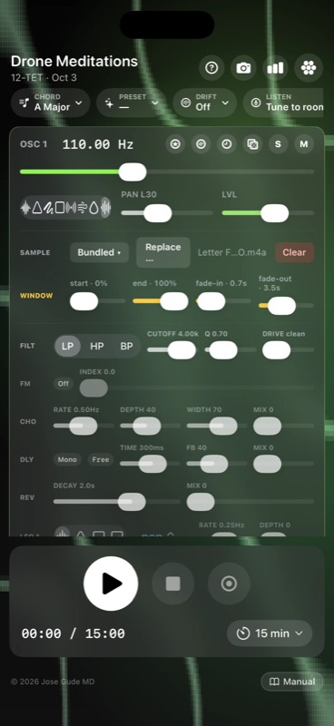
Once a file is loaded, a WINDOW row (amber-tinted) appears under the sample row with four sliders that shape which slice of the file loops:
- START (0–100%) — where in the file looping begins. Skip past silence, bowing scrapes, or a recording's noisy intro.
- END (0–100%) — where the loop wraps back to START. Trim off the decay tail so the loop point lands somewhere musically useful.
- FADE IN (0–10 s) — each loop pass fades up over this duration. Set to ~0.5–2 s to soften the loop-start seam on percussive material.
- FADE OUT (0–10 s) — each loop pass fades down toward END. The classic trick: equal fade-in and fade-out at ~⅓ of the window length give you a continuous breathing loop with no audible seam, even on harsh source material.
The window + fade settings are saved with full presets, so a bundled Tibetan-bowl sample with a 4-second window + 1-second fades becomes a fixed instrument inside the preset rather than the raw recording. Many of the new (Granular) and faded Drone Artists presets rely on this — the Basinski tape-decay cycle, for instance, uses a tight window with long crossfades to suggest the original loop is wearing away.
Granular sampling (iOS, v1.1)
A GRAINY toggle button appears under the WINDOW row whenever a sample is loaded. When on, continuous playback is replaced by a Hann-windowed grain scheduler that reads slices around a user-set position. Combined with the existing GRAIN row (size / density / jitter / spread) plus two new sliders, this is full granular sampling:
- pos (0–100%) — centre position in the sample. Grains are pulled from around this offset. 0 = start of file, 100 = end. A slow drift on pos via a pitch-LFO target gives you scanning-over-time textures.
- scan (0–100%) — per-grain position jitter. 0 = freeze on the exact offset (the most static, cymatic result). 100 = pull grains from anywhere in the sample (most chaotic). Mid-range gives a softly-rumbling cloud.
The grain scheduler is the same one used by the granular pink-noise waveform, so size / density / jitter / pan-spread behave identically. Only the source changes: a recognizable sample instead of pink noise.
What you can build with this: a Tibetan bowl strike frozen on its sustain forever, shimmering. The first second of a vocal vowel held indefinitely. A long ambient field recording chopped into rain-like fragments. A piano sustain decaying into a glittering cloud. Basinski-style tape-decay drones from any source.
iOS only in v1.1. Web granular sampling needs an audio-engine rework and ships in v1.2.
11The pill row
Shortcuts to the app's modal features.
DRIFT — generative slow motion
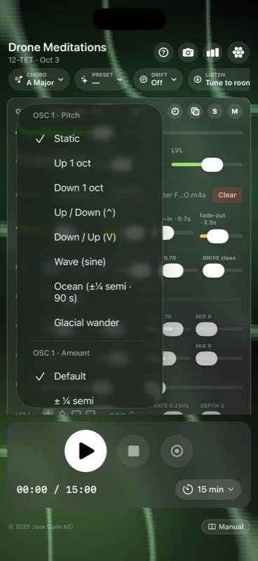
Pick a drift scene and the app gently wanders the chosen parameters over minutes. Scenes include:
- Glacial up / down — every voice slowly climbs or descends by a few cents.
- Octave up / down — voices migrate ±1 octave over the session.
- Wave / Ocean — sine-shaped pitch sway that breathes up and down forever. Wave is the slow up-and-back swing tied to the session timer; Ocean is a perpetual ~90-second ±¼ semitone tide that never resolves — the closest thing to a "still" preset that still feels alive.
- Opposite pan — voices 1&2 drift left, 3&4 right.
- Coordinated scenes — 2 voices up + 2 down, centered drone w/ pair drifting, full panning spiral, …
- Custom — set the dropdown on any single oscillator strip (🌀) to mix-and-match modes per voice.
Drift speed is calibrated to your session length: the full arc completes by the time the timer ends — unless you override it.
Per-voice drift overrides (Amount + Period)
Each oscillator strip's 🌀 Drift menu has four sections: Pitch (the motion shape), Amount (how far it travels), Period (how long one cycle lasts), and Pan (the stereo motion). Defaults follow the scene; pick a chip in Amount or Period to override that voice individually.
- Amount — ½ · 1 · 2 · 3 · 5 · 12 · 24 semitones. Lets you turn a glacial 12-cent drift into a 1- or 2-octave migration, or pull a 1-semitone bend down to a near-static ½-semitone breath.
- Period — 10 s · 30 s · 1 / 3 / 5 / 10 / 20 min (Ocean defaults to ~90 s if you don't override). Slower periods turn drift into pure ambience; faster periods make it audibly cyclic.
- An Auto chip in each section resets that voice to the scene's default amount/period.
These overrides make every voice's motion independent of session length, so you can build slow-bloom textures inside a long meditation: a 20-minute glacial-up bass paired with a 30-second wave on a high pad creates intentional layered motion that the simple "scene" presets can't produce alone.
Quantize to scale
At the top of each oscillator's 🌀 Drift menu there's a Quantize to scale toggle. When on, that voice's final pitch — drift + any pitch-targeted LFOs + FM, all combined — is snapped in real time to the nearest note of the current chord across roughly 2 octaves around the voice's base frequency.
What this turns into musically: continuous pitch wobble becomes arpeggio-like jumps along the chord tones. A slow wave drift that would normally smear ±¼ octave now steps through the chord notes inside that range. Faster LFOs on pitch turn into bouncing arpeggios. The voice always lands on chord-correct pitches, so dense modulation no longer dissonates against the rest of the chord.
Per-voice — so you can leave bass continuous and quantize only the high pad, or vice versa. Changes to the chord (CHORD pill, root, type, octave) recompute the snap targets immediately. Set to off to return to smooth/continuous drift.
LISTEN — tune to room
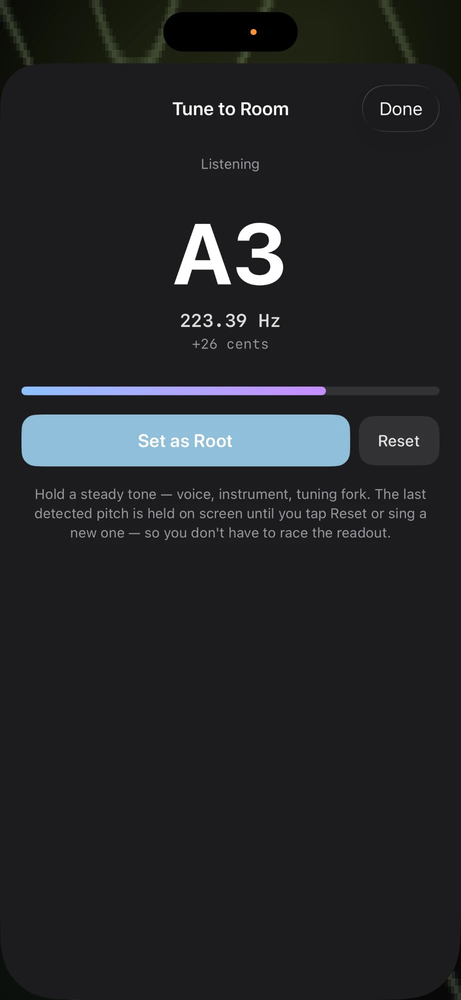
Pop the sheet, grant mic access, and play a sustained note from any instrument (voice, tuning fork, singing bowl). The app runs YIN pitch detection (de Cheveigné & Kawahara) in real time, displays the nearest note + cents offset + Hz + live audio level, and a "Set as Root" button snaps the chord generator's root key to match.
The displayed pitch is held on screen until you tap Reset or sing a new stable pitch — you don't have to race the readout to hit Set as Root. A subtle "HELD" badge appears when the value is sticky (mic went quiet). The status line reads "Held — tap Set as Root, or sing a new note".
On web there's a source picker dropdown — switch to a USB mic / interface input mid-session. iOS uses the system audio input.
PERFORM — cymatics fullscreen
Hides every control element, leaving only the live Chladni pattern (with sand particles + zoom). A tiny "Exit" pill stays in the top-left; on iOS it auto-dims after 3 s but never disappears, and tapping anywhere wakes it back to full brightness. Esc exits on web.
JOURNEY — scripted meditations
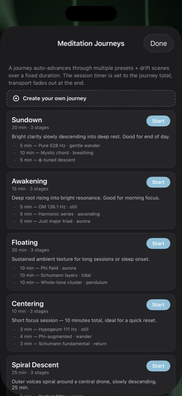
25 multi-stage timed journeys auto-advance through presets + drift scenes. 15 general + 10 drone-artist:
- General: Sundown, Awakening, Floating, Body Scan, Cathedral, Mountain Climb, Vespers, Crystal Cave, Phi Spiral, Quartz, Lullaby, Tibetan Bowl, Storm Front, Centering, Spiral Descent.
- Drone-artist arcs: Deep Listening Lineage (Oliveros → Radigue → Stars of the Lid · 45 min), Heavy Resonance (Sunn O))) → Earth → Niblock · 30 min · drop master volume!), Minimalist Arc (Riley → Budd → Palestine · 25 min), Spiritual Path (Coltrane → Wada → Haino · 35 min), Sonic Cathedral, Black Mass, Slow Bloom, Tape & Tar, Awakening Drone, Microtonal Garden.
The session timer auto-sets to the journey total. Stop halts both the journey scheduler and the transport.
Compose your own. The "＋ Create your own journey" button at the top of the Journey sheet opens a composer where you name a journey and add any number of stages — each one a preset + drift scene + duration (0.5–90 minutes). User journeys are saved locally and appear in a "Your journeys" section above the curated list, with pencil (edit) and × (delete) controls.
MORPH — interpolate between two presets
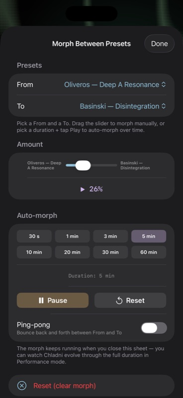
The MORPH pill opens a sheet with two preset dropdowns and a 0–100% slider. As you drag, every per-voice parameter is interpolated between A and B in real time:
- Log interpolation on frequencies, filter cutoff & Q, reverb decay, delay time, chorus rate, FM index (musically smoother than linear across octaves).
- Linear on mix / depth / pan / drive / feedback / width.
- Discrete swap at the midpoint (≥ 50%) on waveform, filter type, delay mode, FM source, LFO shape + target.
The preset name flips to "A → B (NN%)" while morphing. Clear morph wipes the From/To pair and returns to plain preset behavior.
Auto-morph (time-driven). Below the slider, the Auto-morph panel lets you pick a duration (30 s · 1 / 3 / 5 / 10 / 20 / 30 / 60 min) and tap ▶ Play. The morph slider then crawls from 0 → 100 % over that duration, applying every parameter blend continuously — a 20-minute Oliveros → Basinski morph becomes a guided meditation in itself. ⏸ Pause freezes mid-morph; ↺ Reset snaps back to 0 % without losing the From/To selection. Tick Ping-pong to bounce back and forth between A and B forever. The timer keeps running when you close the sheet, so you can dismiss the controls and watch Chladni evolve through the full duration. Especially fun between Drone Artists presets — try morphing Oliveros → Stars of the Lid, or Sunn O))) → Earth.
GALLERY — cymatics snapshots (web)
Every snapshot you save in the pop-out Chladni window is mirrored here. Tap a thumbnail to re-download; the × button removes it from the gallery only — already-downloaded PNGs aren't touched. Capped at 200 to keep localStorage healthy.
12Chladni visualization
A physically-calibrated render of how each frequency would vibrate a square plate.
The frequency → pattern mapping was fit from 17 brusspup demo frames (345 Hz → 6051 Hz), where each frame was visually identified as a (m,n) antisymmetric eigenmode on a thin square plate:
f(m, n) ≈ K · (m² + n²), K ≈ 18.6 ± 0.8 Hz
For each voice, the renderer picks the two adjacent eigenmode pairs that bracket the live frequency and crossfades between them, so vibrato (pitch-LFO modulation) breathes smoothly between physical modes instead of snapping or following an arbitrary continuous curve.
The Chladni renderer also adds a small center "driver bolt" (brusspup's plate is center-driven), and a thin nodal ring at small radius, on top of every frame.
Tiling
The Chladni cos math is naturally periodic, so the pattern tiles to fill the viewport at any zoom level. You'll never see a clipped plate boundary — even zoomed all the way out, the whole screen is filled.
Zoom
The vertical zoom slider on the left (web) or pinch gesture (iOS) controls plate scale, 0.25× to 4×. Persists across launches. On iOS the slider/pinch fades when the main controls are visible so it never competes with the panel.
13Pop-out Chladni (web)
A dedicated window with WebGL-accelerated rendering, 3000 sand particles, and snapshot export.
- Open from the Chladni toggle's pop-out arrow.
- Receives live oscillator state from the main window via
BroadcastChannel— frequencies, mutes, solos, vibrato all sync at ~15 fps. - 3000 sand grains drift along the gradient toward nodal lines. Particles physically migrate to new positions when frequencies change.
- Bottom controls strip mirrors frequency/solo/mute for each voice — adjust without flipping back to the main window.
- The 📷 snapshot button (or S) saves a PNG to Downloads and mirrors it into the in-app Gallery.
- The sand toggle (or G) removes the particle layer for a cleaner shader-only image.
- Scroll wheel zooms; Esc closes the window.
14Spectrum analyzer
Real-time FFT view tapped post-limiter.
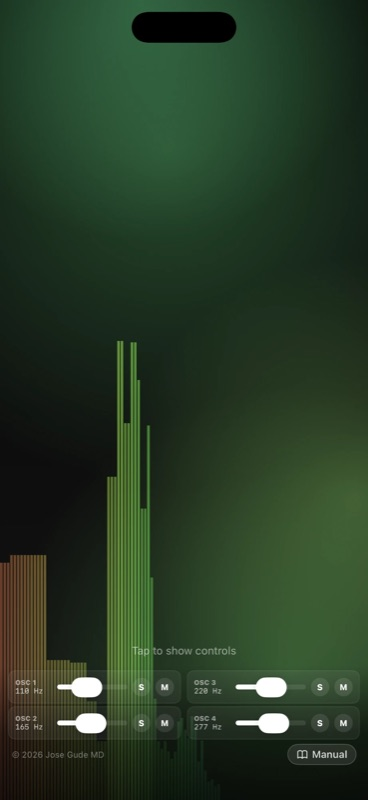
Toggle the chart-bar button in the header to overlay a log-frequency spectrum bar graph (20 Hz – 16 kHz). It's a quick way to verify what's actually leaving the master bus — useful when chasing why a "bass-only" preset isn't producing low energy (often a runaway high-pass filter or an LFO killing the fundamental).
The web version uses AnalyserNode.getByteFrequencyData; iOS uses vDSP forward FFT with a Hann window on a tap installed on engine.outputNode.
15Transport & recording
Play / pause / stop
The round play button fades audio in over ~1 s (or 3 s if this is the first play of a fresh session). Pause and Stop both do something different from any other synth's transport — read on.
Reverb-bloom fades (iOS)
When you tap Pause or Stop, the app doesn't just drop the master volume. Each voice's reverb mix and decay simultaneously bloom upward, then descend back to your preset values as the master volume fades to silence. The effect is the sound dissolving into the room rather than getting quieter and quieter — like the last note of a song letting the hall finish for it.
- Stop: 8 s total fade. Logarithmic master descent (every second drops the same number of dB, so the wind-down feels uniform). Reverb bloom peaks at ~2.4 s (mix climbs to 0.7, decay to 7 s), then ramps back down so the wet signal joins the master in silence by t=8 s.
- Pause: 1.4 s total fade. Same triangular shape, smaller bloom (peak mix 0.35, decay 3.5 s, peaks at ~0.35 s). A gentle "lift then settle" — quick enough to feel like a pause, atmospheric enough to feel composed.
Both fades restore each voice's original reverb settings on completion (or immediately, if you press Play while a fade is in flight) — so your preset reverb mix isn't permanently changed. Stop also resets the session timer to 0.
Session timer
Default 30 min. Tap the timer readout to change the duration. The app fades out gently in the last few seconds. Useful when you're using Drone Meditations as a sleep aid — set 20 min and trust it to fade itself.
Recording (web + iOS)
The record button writes the master output to a file:
- Web — WebM/Opus or WebM/PCM (whatever your browser supports), saved to Downloads.
- iOS — two files per session, both written into
Drone Meditations/Recordings/in the Files app:- .wav — 24-bit uncompressed PCM. The primary deliverable: bit-perfect, professional-grade, ideal for editing in a DAW or archival. Large (~17 MB/min stereo).
- .m4a — AAC sidecar, ~10× smaller, identical loudness + fades baked in. Ideal for AirDropping, emailing, or dropping into the Music app.
Recording captures whatever is going through the master limiter — so all FX, drift, LFO modulation, journeys, etc. — exactly as you hear them. The share sheet appears automatically when mastering finishes (typically < 1 second after Stop).
16MIDI input (web)
Any connected MIDI controller can drive the chord generator's root key.
Connect a USB MIDI keyboard / controller and press any key. The chord generator's root key snaps to the played note (octave clamped to the 1–6 range); the active chord template stays the same so you can play the chord type by sliding around the keyboard.
Web MIDI is initialized on first user gesture (click anywhere). Browsers that don't support Web MIDI (Safari without flags) silently fall back to no-MIDI.
17iOS-only features
First-launch tour
The first time you open the iOS app, a 5-card tour walks you through Play / Preset / Tweak / Cymatics / Go Further. Swipe through or tap Next; Skip jumps to the synth. You can re-open the tour any time from the ? button in the controls header.
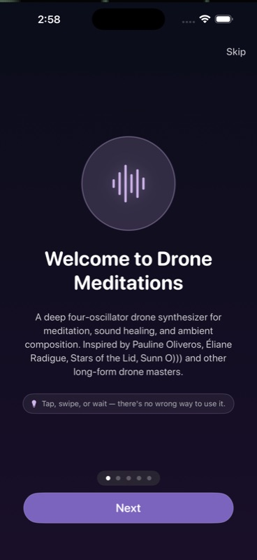
Now Playing / Lock Screen
While playing, iOS shows Drone Meditations on the Lock Screen and Control Center with play / pause controls. Plays through silent mode (the audio session uses the .playback category) and supports background audio so you can lock the screen mid-session.
Haptics
Optional. The haptic button in the master row cycles through three states on tap: Off → Light → Heavy → Off. The device taps in sync with the slowest active LFO across all voices; depth determines per-tap intensity, and the mode scales it: Light halves the intensity for a barely-there pulse, Heavy uses the full computed scale. Most noticeable with a 0.5–1 Hz amplitude LFO. v1.1: the choice persists across launches (UserDefaults).
Photos library snapshot
The 📷 camera button renders a 1500×1500 frame of the current Chladni state and saves it directly to your Photos library (add-only permission — the app never reads your existing photos). First save prompts for permission; subsequent saves are silent. A "Saved to Photos" toast confirms.
Pinch zoom
Two-finger pinch on the Chladni view zooms in and out. Persists across launches.
Performance exit safety
In cymatics fullscreen, the tiny "Exit" pill dims to 45% after 3 seconds, but never fully disappears, and tapping anywhere on screen brings it back to full brightness. (You can't get stuck.)
18Keyboard shortcuts (web)
| Key | Action |
|---|---|
| Space | Play / pause transport. |
| Esc | Close any open sheet; exit Performance mode; close the pop-out Chladni window. |
| S (pop-out) | Take a snapshot. |
| G (pop-out) | Toggle sand particles. |
| Scroll wheel | Zoom Chladni in the pop-out window. |
19A note on the Solfeggio claims
An honest, evidence-based take.
The Solfeggio preset descriptions in this app use language like "Traditionally associated with…" — and that wording is deliberate.
The popular Solfeggio system (174, 285, 396, 417, 528, 639, 741, 852, 963 Hz) is a 20th-century invention. It was published in 1999 by Joseph Puleo and Leonard Horowitz; the frequencies were derived numerologically (each reduces to a single digit in a specific Pythagorean scheme), not from any medieval chant or ancient text. The medieval "ut/re/mi/fa/sol/la" was a solmization system, not a list of frequencies.
There is no peer-reviewed evidence that 528 Hz "repairs DNA," that 396 Hz "liberates guilt," or any of the other claims that circulate around these tones. A handful of papers in low-rigor journals (including predatory or low-impact outlets) discuss possible psychoacoustic effects, but these don't replicate at the level mainstream medicine would accept.
That said: specific frequencies do affect mood, attention, and physiology — and so does sitting still for 20 minutes listening to anything calming. The presets are included because people enjoy them and the harmonic context is interesting, not as a medical claim. If you find them useful for relaxation or focus, that's a real and welcome outcome — just don't expect the literal claims attached to them in pop wellness culture.
20Tips & gotchas
Use the dice.
🎲 randomize is the fastest way to find new sounds. Hit it on one strip while leaving the other three steady — instant variation against a stable base.
Solo to learn.
S a single voice and slowly walk through every parameter (filter, LFOs, drift). It's the best way to learn what each control sounds like in isolation.
Master volume defaults to 65%.
Four voices summed through FX into a limiter can clip easily. The limiter at −0.1 dB protects your ears, but if it's working too hard you'll hear pumping — pull master down.
Long delay + slow drift = drone.
For ambient pieces, try delay time 1.5 s, feedback 0.7, plus a glacial-up drift scene. The delay keeps reintroducing past frequencies as the present drifts up.
Voice presets compose.
Save four favorites — a deep sub, a singing pad, a slow bell, a ping-pong glitch — then load them into different strips for instant 4-voice arrangements.
Tune to room before recording.
If you're recording with an acoustic instrument or singing bowl in the room, use LISTEN to snap the chord generator to its pitch so the drone won't beat against it.
21Credits
Drone Meditations is a personal project by Jose Gude MD, designed and shipped on both web and iOS in 2026.
Special thanks to:
- brusspup (Eric Roner) — for the Chladni demo footage used to physically calibrate the visualization.
- The Web Audio, AVAudioEngine, and SwiftUI teams — for primitives stable enough to ship a 4-voice synth in a weekend.
- Wendy Carlos, Harry Partch, Lou Harrison — for the tuning systems that broaden what "in tune" can mean.